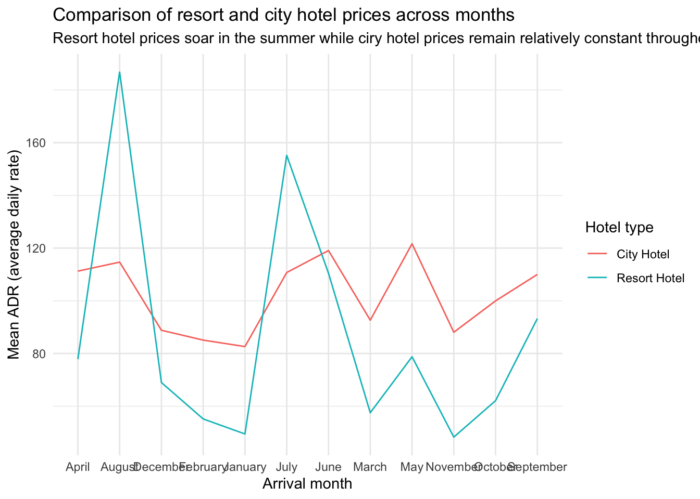
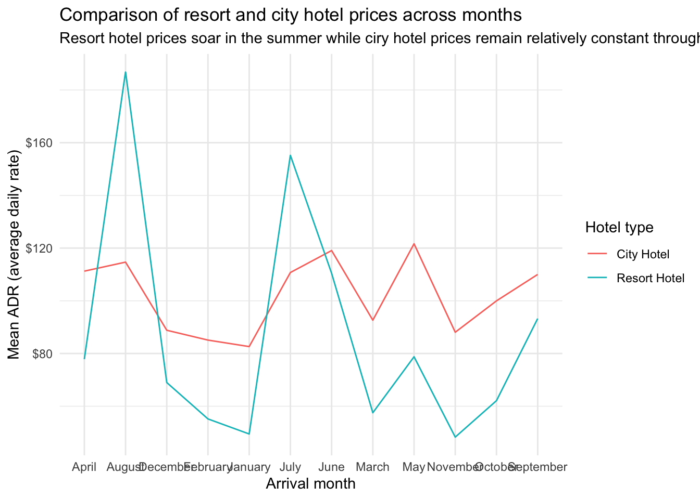

library(tidyverse)
library(skimr)
library(scales)Hotels, types, classes
Application exercise
Sugested answers
Packages
We will use the following two packages in this application exercise.
- tidyverse: For data import, wrangling, and visualization.
- skimr: For summarizing the entire data frame at once.
- scales: For better axis labels.
Type coercion
Demo: Determine the type of the following vector. And then, change the type to numeric.
x <- c("1", "2", "3") typeof(x)[1] "character"as.numeric(x)[1] 1 2 3Demo: Once again, determine the type of the following vector. And then, change the type to numeric. What’s different than the previous exercise?
y <- c("a", "b", "c") typeof(y)[1] "character"as.numeric(y)Warning: NAs introduced by coercion[1] NA NA NADemo: Once again, determine the type of the following vector. And then, change the type to numeric. What’s different than the previous exercise?
z <- c("1", "2", "three") typeof(z)[1] "character"as.numeric(z)Warning: NAs introduced by coercion[1] 1 2 NADemo: Suppose you conducted a survey where you asked people how many cars their household owns collectively. And the answers are as follows:
survey_results <- tibble(cars = c(1, 2, "three")) survey_results# A tibble: 3 × 1 cars <chr> 1 1 2 2 3 threeThis is annoying because of that third survey taker who just had to go and type out the number instead of providing as a numeric value. So now you need to update the
carsvariable to be numeric. You do the followingsurvey_results |> mutate(cars = as.numeric(cars))Warning: There was 1 warning in `mutate()`. ℹ In argument: `cars = as.numeric(cars)`. Caused by warning: ! NAs introduced by coercion# A tibble: 3 × 1 cars <dbl> 1 1 2 2 3 NAAnd now things are even more annoying because you get a warning
NAs introduced by coercionthat happened while computingcars = as.numeric(cars)and the response from the third survey taker is now anNA(you lost their data). Fix yourmutate()call to avoid this warning.survey_results |> mutate( cars = if_else(cars == "three", "3", cars), cars = as.numeric(cars) )# A tibble: 3 × 1 cars <dbl> 1 1 2 2 3 3Your turn: First, guess the type of the vector. Then, check if you guessed right. I’ve done the first one for you, you’ll see that it’s helpful to check the type of each element of the vector first.
c(1, 1L, "C")v1 <- c(1, 1L, "C") # to help you guess typeof(1)[1] "double"typeof(1L)[1] "integer"typeof("C")[1] "character"# to check after you guess typeof(v1)[1] "character"c(1L / 0, "A")v2 <- c(1L / 0, "A") # to help you guess typeof(1L)[1] "integer"typeof(0)[1] "double"typeof(1L / 0)[1] "double"typeof("A")[1] "character"# to check after you guess typeof(v2)[1] "character"c(1:3, 5)v3 <- c(1:3, 5) # to help you guess typeof(1:3)[1] "integer"typeof(5)[1] "double"# to check after you guess typeof(v3)[1] "double"c(3, "3+")v4 <- c(3, "3+") # to help you guess typeof(3)[1] "double"typeof("3+")[1] "character"# to check after you guess typeof(v4)[1] "character"c(NA, TRUE)v5 <- c(NA, TRUE) # to help you guess typeof(NA)[1] "logical"typeof(TRUE)[1] "logical"# to check after you guess typeof(v5)[1] "logical"
Hotel bookings
# From TidyTuesday: https://github.com/rfordatascience/tidytuesday/blob/master/data/2020/2020-02-11/readme.md
hotels <- read_csv("https://raw.githubusercontent.com/rfordatascience/tidytuesday/master/data/2020/2020-02-11/hotels.csv")Question: Take a look at the the following visualization. How are the months ordered? What would be a better order?

Demo: Reorder the months on the x-axis (levels of arrival_date_month) in a way that makes more sense. You will want to use a function from the forcats package, see https://forcats.tidyverse.org/reference/index.html for inspiration and help.
hotels |>
group_by(hotel, arrival_date_month) |> # group by hotel type and arrival month
summarise(mean_adr = mean(adr), .groups = "drop") |> # calculate mean adr for each group
ggplot(aes(
x = arrival_date_month, # x-axis = arrival_date_month
y = mean_adr, # y-axis = mean_adr calculated above
group = hotel, # group lines by hotel type
color = hotel) # and color by hotel type
) +
geom_line() + # use lines to represent data
theme_minimal() + # use a minimal theme
labs(
x = "Arrival month", # customize labels
y = "Mean ADR (average daily rate)",
title = "Comparison of resort and city hotel prices across months",
subtitle = "Resort hotel prices soar in the summer while ciry hotel prices remain relatively constant throughout the year",
color = "Hotel type"
)
Stretch goal: If you finish the above task before time is up, change the y-axis label so the values are shown with dollar signs, e.g. $80 instead of 80. You will want to use a function from the scales package, see https://scales.r-lib.org/reference/index.html for inspiration and help.
hotels |>
group_by(hotel, arrival_date_month) |> # group by hotel type and arrival month
summarise(mean_adr = mean(adr), .groups = "drop") |> # calculate mean adr for each group
ggplot(aes(
x = arrival_date_month, # x-axis = arrival_date_month
y = mean_adr, # y-axis = mean_adr calculated above
group = hotel, # group lines by hotel type
color = hotel) # and color by hotel type
) +
geom_line() + # use lines to represent data
theme_minimal() + # use a minimal theme
labs(
x = "Arrival month", # customize labels
y = "Mean ADR (average daily rate)",
title = "Comparison of resort and city hotel prices across months",
subtitle = "Resort hotel prices soar in the summer while ciry hotel prices remain relatively constant throughout the year",
color = "Hotel type"
) +
scale_y_continuous(labels = label_dollar())